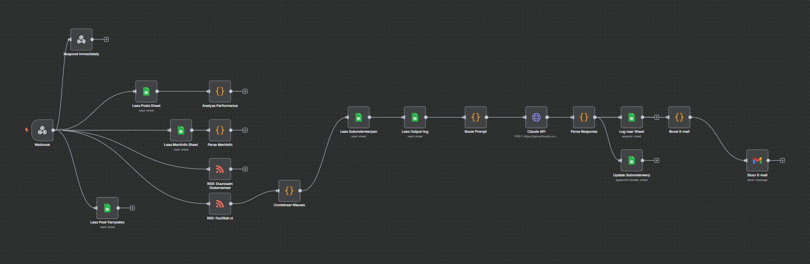

Contentproductie voor LinkedIn bleef bij ReFurnity vaak liggen: goede ideeën, geen tijd om ze uit te werken. Een AI-gedreven B2B content pipeline die LinkedIn-posts en blogartikelen genereert vanuit RSS-feeds en performance-data, met een Lovable-dashboard waarmee het team zelfstandig beheert. Er wordt nooit automatisch gepubliceerd.

N8N-workflow diagram
Dashboard-walkthrough
De pipeline versnelt research, structuur en een eerste concept: het werk dat de meeste tijd kost. Publicatie blijft bewust een handmatige stap: merkstem, toon en timing op LinkedIn zijn te gevoelig om zonder review de deur uit te laten gaan. Het Lovable-dashboard is daarom niet alleen een preview, maar de plek waar het team elk concept goedkeurt, bijschaaft of afwijst voordat het verder gaat.
Kant-en-klaar conceptbericht in ReFurnity's tone-of-voice, klaar voor review in het dashboard.
Langere vorm content vanuit dezelfde RSS-bron, weggeschreven naar Google Docs voor redactie.
Resultaten van gepubliceerde content vloeien terug in Sheets en verbeteren de volgende generatie-ronde.